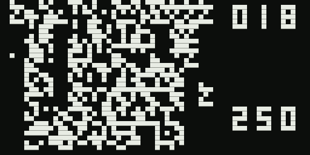

Woodworm
A. Groves · DREAMER no. 15 (1981-11) p. 12 1K RAMplayable, see notes


A woodworm starts at the left edge of a random forest of softwood and hardwood. Eat your way to the right with the fewest points: 1 point per softwood meal and 6 per hardwood meal. The best score of the series is kept at the bottom right.
Keys
1 up, 9 down, 6 right.
Files
| File | Version | Load | Run |
|---|---|---|---|
| Woodworm.c8 | main | 0200-02EF | C000 |
Listing as transcribed (with notes): woodworm.txt
Source
DREAMER no. 15 on archive.org, p. 12 (PDF page 14). Author: A. Groves.
Corrections applied
- 02EA 72 -> FA (the printed 72 is a memory dump left after a game; the article says the best score starts at 250).
Open doubts
None.